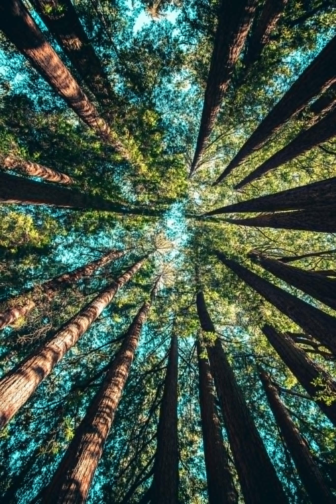

PRISTATYMAS
Konferencija "Miškų vaidmuo tvarumo ir klimato kaitos kontekste" sukurta tam, kad miškų išsaugojimo suvokimas keliautų iš kartos į kartą ir primintų, kaip tai siejasi su tvarumo principais ir klimato atšilimo mažinimu. Miškėnų bendruomenė nuo 1972 m. auga ir pritraukia vis daugiau jaunų žmonių, kurie supranta miškų svarbą ir prisideda prie dar daugiau įvairių iniciatyvų išsaugojant ar atnaujinant miškus.
VIZIJA
Sąmoninga visuomenė, prisidedanti prie miškų išsaugojimo ir atnaujinimo ir vertinanti tai kaip esminį klimato stabilumo elementą.
MISIJA
- Šviesti žmones apie miškų svarbą tvarumo ir klimato kaitos kontekste, peteikiant pavyzdžius kaip miškai gelbėja šiems principams.
- Įkvėpti ir skatinti bendruomenę prisidėti prie miškų apsaugos ir atsodinimų, taip prisidedant prie tvarumo.
PROGRAMA
9:00 - 10:00
Registracija
10:00 - 12:00
Paskaita „Tvarumo samprata šiandien"
12:00 - 12:20
Pertrauka
12:20 - 14:30
Diskusija „Kaip pritraukti daugiau jaunų žmonių prie miško išsaugojimo aktyvacijų"
14:30 - 15:00
Pietūs
15:00 - 17:00
Paskaita „Miškai ir klimato atšilimas, kuo tai susiję?"
REGISTRACIJA
Nuskanuokite QR kodą ir užsiregistruokite į konferenciją.